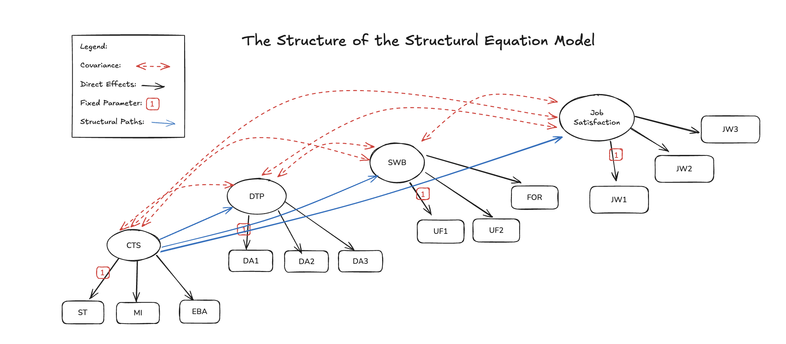
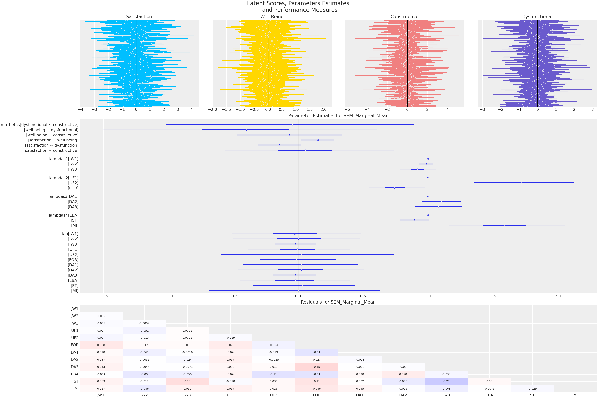

| JW1 | JW2 | JW3 | UF1 | UF2 | FOR | DA1 | DA2 | DA3 | EBA | ST | MI | |
|---|---|---|---|---|---|---|---|---|---|---|---|---|
| 0 | 1.564549 | 2.131489 | 1.829696 | 0.207898 | 0.815171 | 1.069107 | -0.795243 | -0.904991 | -1.948615 | -0.418909 | -0.154725 | -1.176139 |
| 1 | -1.215694 | -0.904318 | -1.632459 | -0.617413 | -0.410714 | -0.348532 | -0.001548 | -0.026768 | 1.021058 | -0.210109 | -0.642090 | 1.451244 |
| 2 | -1.607601 | -0.551109 | -0.391220 | 0.476678 | -0.860346 | 0.348825 | 0.269720 | 0.083422 | -0.535224 | -0.852438 | -1.100104 | -1.681564 |
| 3 | -0.614410 | -0.053015 | 0.175559 | 0.478518 | 0.985361 | 0.068923 | -0.237487 | -0.490431 | -0.825420 | -0.397762 | -0.958062 | 0.552549 |
| 4 | 0.053870 | -0.783368 | -0.313718 | -0.984889 | -1.501942 | -0.677978 | 0.350947 | -0.055142 | -0.942284 | 0.226028 | 0.140575 | -1.705896 |
Bayesian Workflow with SEMs
PyCon Ireland 2025
Nathaniel Forde
Data Science @ Personio
and Open Source Contributor @ PyMC
2025-11-16
Preliminaries
Who am I?
- I’m a data scientist at Personio
- Bayesian statistician,
- Reformed philosopher and logician.
- Website: https://nathanielf.github.io/
Code or it didn’t Happen
The worked examples used here can be found here

My Website
The Pitch
Structuring Your Work with Structural Equation Models
Probabilistic programming languages (PPLs) are structures for articulating assumptions and relationships, and a scaffold for exploring uncertainty.
Structural Equation models (SEMs) formalize scientific theory as a system of statistical relationships.
The Bayesian workflow binds these together into a compelling practice: an iterative conversation between theory and data that rewards curiosity, coherence, and care.
Agenda
- The Idea of a Workflow:
- Craft versus Checklist
- Job Satisfaction
- Bayesian Workflow with SEMs:
- Confirmatory Factor Structures
- Adding Structural Relations
- Adding Covariance Structure
- Conclusion
- Craft and Statistical Workflow
- Technical Appendix
- Adding Hierarchical Structure
- Parameter Recovery and Model Validation
The Idea of a Workflow
Craft in Statistical Modelling
- Embraces process, imperfection, and iteration.
- Aims at the acquisition of scientific knowledge
- Supports generalisable findings and solutions
- Restore ownership: you shape, test, and refine — the model carries your imprint.
Checklists in Statistical Modelling
- Reduce inquiry to compliance: ticking boxes replaces genuine understanding.
- Create the illusion of rigor while bypassing uncertainty and context.
- Confuse progress with throughput: more boxes checked ≠ better science.
- Promotes shallow levels of engagement, infantalises the management class. Hinders effective decision making.
- Strips away ownership: you don’t make something, you just complete a task.
Job Satisfaction Data
- Constructive Thought Strategies (CTS): Thought patterns that are positive or helpful, such as:
- Self-Talk (positive internal dialogue):
ST - Mental Imagery (visualizing successful performance or outcomes):
MI - Evaluating Beliefs & Assumptions (i.e. critically assessing one’s internal assumption:
EBA
- Self-Talk (positive internal dialogue):
- Dysfunctional Thought Processes: (
DA1–DA3) - Subjective Well Being: (
UF1,UF2,FOR) - Job Satisfaction: (
JW1–JW3)
Contemporary Bayesian Workflow
- Start with Theory and Prior Knowledge
- Iterate with Checks and Visual Diagnostics
- Refine Structure and Layer Complexity
- Assess consistency of Signal
- Validate through Sensitivty Analysis
- Own the Process

Structural Equation Models
Richly Parameterised Regressions with Expressive Encodings of Measurement Error and Latent Constructs
The SEM workflow
- Start with Confirmatory Factor Analysis (CFA):
- Validate that our measurement model holds.
- Ensure latent constructs are reliably represented by observed indicators.
- Layer Structural Paths:
- Add theoretically-motivated regressions between constructs.
- Assess whether hypothesized relationships improve model fit.
- Refine with Residual Covariances:
- Account for specific shared variance not captured by factors.
- Keep structure transparent while improving realism.
- Iterative Validation:
- Each step asks: Does this addition honor theory? Improve fit?
- Workflow = constant negotiation between parsimony and fidelity.
Job Satisfaction Data
The Data for SEM modelling is a multivariate data structure with natural theor-driven categories of variables which reflect some mis-measured latent factor.
The Confirmatory Factor Structure
Bayesian Workflow with SEMs
CFA
with pm.Model(coords=coords) as cfa_model_v1:
# --- Factor loadings ---
lambdas_1 = make_lambda('indicators_1', 'lambdas1', priors=[1, .5])
lambdas_2 = make_lambda('indicators_2', 'lambdas2', priors=[1, .5])
lambdas_3 = make_lambda('indicators_3', 'lambdas3', priors=[1, .5])
lambdas_4 = make_lambda('indicators_4', 'lambdas4', priors=[1, .5])
Lambda = pt.zeros((12, 4))
Lambda = pt.set_subtensor(Lambda[0:3, 0], lambdas_1)
Lambda = pt.set_subtensor(Lambda[3:6, 1], lambdas_2)
Lambda = pt.set_subtensor(Lambda[6:9, 2], lambdas_3)
Lambda = pt.set_subtensor(Lambda[9:12, 3], lambdas_4)
Lambda = pm.Deterministic('Lambda', Lambda)
sd_dist = pm.Exponential.dist(1.0, shape=4)
chol, _, _ = pm.LKJCholeskyCov("chol_cov", n=4, eta=2, sd_dist=sd_dist, compute_corr=True)
eta = pm.MvNormal("eta", 0, chol=chol, dims=("obs", "latent"))
# Construct Pseudo Observation matrix based on Factor Loadings
mu = pt.dot(eta, Lambda.T) # (n_obs, n_indicators)
## Error Terms
Psi = pm.InverseGamma("Psi", 5, 10, dims="indicators")
_ = pm.Normal('likelihood', mu=mu, sigma=Psi, observed=observed_data)\[ \eta \sim MvN(0, \Sigma)\] \[ \mu = \color{blue}{\Lambda} \eta\] \[\mathbf{y} = N(\mu, \Psi)\]
Bayesian Workflow with SEMs
CFA Implications
- Estimated Factor Loadings are close to 1
- The indicator(s) are strongly reflective of the latent factor.
- Posterior Predictive Residuals are close to 0
- Latent factors move together in intuitive ways.
- High Satisfaction ~~ High Well Being
The SEM Regression

The SEM Regression
with Mediation Effects
The SEM Regression
with Staggered Mediation Effects

The SEM Regression
with Residuals Covariance Structures
Bayesian Workflow with SEMs
SEM
with pm.Model(coords=coords) as sem_model_v3:
# --- Factor loadings ---
lambdas_1 = make_lambda('indicators_1', 'lambdas1', priors=[1, .5])
lambdas_2 = make_lambda('indicators_2', 'lambdas2', priors=[1, .5])
lambdas_3 = make_lambda('indicators_3', 'lambdas3', priors=[1, .5])
lambdas_4 = make_lambda('indicators_4', 'lambdas4', priors=[1, .5])
Lambda = pt.zeros((12, 4))
Lambda = pt.set_subtensor(Lambda[0:3, 0], lambdas_1)
Lambda = pt.set_subtensor(Lambda[3:6, 1], lambdas_2)
Lambda = pt.set_subtensor(Lambda[6:9, 2], lambdas_3)
Lambda = pt.set_subtensor(Lambda[9:12, 3], lambdas_4)
Lambda = pm.Deterministic('Lambda', Lambda)
latent_dim = len(coords['latent'])
sd_dist = pm.Exponential.dist(1.0, shape=latent_dim)
chol, _, _ = pm.LKJCholeskyCov("chol_cov", n=latent_dim, eta=2, sd_dist=sd_dist, compute_corr=True)
gamma = pm.MvNormal("gamma", 0, chol=chol, dims=("obs", "latent"))
B = make_B()
I = pt.eye(latent_dim)
eta = pm.Deterministic("eta", pt.slinalg.solve(I - B + 1e-8 * I, gamma.T).T)
mu = pt.dot(eta, Lambda.T)
## Error Terms
Psi = make_Psi('indicators')
_ = pm.MvNormal('likelihood', mu=mu, cov=Psi, observed=observed_data)\[\zeta \sim MvN(0, \Sigma_{\zeta})\] \[\eta = (I-\color{blue}{B})^{-1} \zeta\] \[\mu = \Lambda \eta_i\] \[ \mathbf{y} \mid \eta \sim MvN(\mu, \Psi)\]
Bayesian Workflow with SEMs
SEM Implications
- The Beta coefficients encode the directional effects of the latent constructs on one another
- High Dysfunction -> Negative Impact on Satisfaction
- Factor loadings remain close to 1
- Posterior Predictive of the Residuals have Improved
Bayesian Workflow with SEMs
Mean Structures and Marginalising
with pm.Model(coords=coords) as sem_model_mean_structure:
# --- Factor loadings ---
lambdas_1 = make_lambda('indicators_1', 'lambdas1', priors=[1, .5])
lambdas_2 = make_lambda('indicators_2', 'lambdas2', priors=[1, .5])
lambdas_3 = make_lambda('indicators_3', 'lambdas3', priors=[1, .5])
lambdas_4 = make_lambda('indicators_4', 'lambdas4', priors=[1, .5])
Lambda = pt.zeros((12, 4))
Lambda = pt.set_subtensor(Lambda[0:3, 0], lambdas_1)
Lambda = pt.set_subtensor(Lambda[3:6, 1], lambdas_2)
Lambda = pt.set_subtensor(Lambda[6:9, 2], lambdas_3)
Lambda = pt.set_subtensor(Lambda[9:12, 3], lambdas_4)
Lambda = pm.Deterministic('Lambda', Lambda)
sd_dist = pm.Exponential.dist(1.0, shape=4)
chol, _, _ = pm.LKJCholeskyCov("chol_cov", n=4, eta=2, sd_dist=sd_dist, compute_corr=True)
Psi_zeta = pm.Deterministic("Psi_zeta", chol.dot(chol.T))
Psi = make_Psi('indicators')
B = make_B()
latent_dim = len(coords['latent'])
I = pt.eye(latent_dim)
lhs = I - B + 1e-8 * pt.eye(latent_dim) # (latent_dim, latent_dim)
inv_lhs = pm.Deterministic('solve_I-B', pt.slinalg.solve(lhs, pt.eye(latent_dim)), dims=('latent', 'latent1'))
# Mean Structure
tau = pm.Normal("tau", mu=0, sigma=0.5, dims="indicators") # observed intercepts
alpha = pm.Normal("alpha", mu=0, sigma=0.5, dims="latent") # latent means
mu_y = pm.Deterministic("mu_y", tau + pt.dot(Lambda, pt.dot(inv_lhs, alpha)))
Sigma_y = pm.Deterministic('Sigma_y', Lambda.dot(inv_lhs).dot(Psi_zeta).dot(inv_lhs.T).dot(Lambda.T) + Psi)
M = Psi_zeta @ inv_lhs @ Lambda.T @ pm.math.matrix_inverse(Sigma_y)
eta_hat = pm.Deterministic('eta', alpha + (M @ (observed_data - mu_y).T).T, dims=('obs', 'latent'))
_ = pm.MvNormal("likelihood", mu=mu_y, cov=Sigma_y, observed=observed_data)
\[\mu = \tau + \Lambda(1 - B)^{-1}\alpha\] \[\color{blue}{\Sigma_{\mathcal{y}}} = \Psi + \\ \Lambda(I - B)^{-1}\Psi_{\gamma}(I - B)^{T}\Lambda^{T} \]
\[ \mathcal{y} \sim MvN(\mu, \Sigma_{y})\]
Bayesian Workflow with SEMs
Mean Structure Implications

- Mean Structure Parameters \(\tau\) show poor identification
- Beta coefficients and Factor Loading Estimates consistent with prior models
- Posterior Predictive check on Residuals provide evidence of a good fit.
Bayesian Workflow with SEMs
Assessing the Indirect Effects
Bayesian Workflow with SEMs
Comparing Model Estimates
- The measurement model is stable: adding the structural paths did not disrupt how the latent variables are measured.
- SEM is not introducing distortions into the factor structure.
- The hypothesized regression paths are consistent with the observed covariance patterns.
- Constructive thought processes: self-talk, visualisation and evaluation of beliefs improve job satisfaction.
- Effects are achieved directly and indirectly through overall well being.
Workflow and Craft
Craft as Discovery
“Abandon the idea of predetermination, the shaping force of your intentions…rely less on the priority of your intentions and more on the immediacy of writing… You’ll see that some of your sentences are still conjectural… start noticing the thoughts and implications surrounding them.” - Verlyn Klinkenborg in Several Short Sentences about Writing”
- Modeling, like writing, is an act of exploration.
- Expect surprises and anomalies—they teach more than preconceptions.
- Embrace uncertainty; allow the data to guide the process.
Craft as Discipline
” [T]he goal is to represent the systematic relationships between the variables and between the variables and the parameters … Discrepancies between the model and data can be used to learn about the ways in which the model is inadequate for the scientific purposes at hand, and thus to motivate expansions and changes to the model … a model is a story of how the data could have been generated; the fitted model should therefore be able to generate synthetic data that look like the real data; failures to do so in important ways indicate faults in the model.” - Gelman & Shalizi in Philosophy and the practice of Bayesian statistics
- Building statistical models is inherently iterative and expansionary
- Assumptions are encoded transparently and their implications are assessed for cogency
- Where our assumptions fail, they are revised or rejected. Building confidence and clarity.
- The process yields compelling, justifiable conclusions worthy of your work.
Conclusion: Workflow as Craft
“Here, in short, is what i want to tell you. Know what each sentence says, What it doesn’t say, And what it implies. Of these, the hardest is know what each sentence actually says” - V. Klinkenborg

- In modelling, as in writing, clarity emerges through revision.
- The Bayesian workflow with PyMC teaches us to listen to our models — to read them aloud through simulation, recovery, and critique.
- Each iteration reveals what the model truly says, what it hides, and what it implies.
- Craft lies in that attention — in resisting a flattening automation, and choosing understanding over throughput.
- Through this care, our models become not only more compelling, but more robust — resilient to noise, misfit, and misuse.
Appendix: Variations on the Theme
The SEM Regression
with Hierarchical Structure

The SEM Regression
with Hierarchical Structure
coords['group'] = ['man', 'woman']
with pm.Model(coords=coords) as sem_model_hierarchical2:
# --- Factor loadings ---
lambdas_1 = make_lambda('indicators_1', 'lambdas1', priors=[1, .5])
lambdas_2 = make_lambda('indicators_2', 'lambdas2', priors=[1, .5])
lambdas_3 = make_lambda('indicators_3', 'lambdas3', priors=[1, .5])
lambdas_4 = make_lambda('indicators_4', 'lambdas4', priors=[1, .5])
Lambda = pt.zeros((12, 4))
Lambda = pt.set_subtensor(Lambda[0:3, 0], lambdas_1)
Lambda = pt.set_subtensor(Lambda[3:6, 1], lambdas_2)
Lambda = pt.set_subtensor(Lambda[6:9, 2], lambdas_3)
Lambda = pt.set_subtensor(Lambda[9:12, 3], lambdas_4)
Lambda = pm.Deterministic('Lambda', Lambda)
sd_dist = pm.Exponential.dist(1.0, shape=4)
chol, _, _ = pm.LKJCholeskyCov("chol_cov", n=4, eta=2, sd_dist=sd_dist, compute_corr=True)
Psi_zeta = pm.Deterministic("Psi_zeta", chol.dot(chol.T))
Psi = make_Psi('indicators')
Bs = []
for g in coords["group"]:
B_g = make_B(group_suffix=f"_{g}") # give group-specific names
Bs.append(B_g)
B_ = pt.stack(Bs)
latent_dim = len(coords['latent'])
I = pt.eye(latent_dim)
# invert (I - B_g) for each group
inv_I_minus_B = pt.stack([
pt.slinalg.solve(I - B_[g] + 1e-8 * I, I)
for g in range(len(coords["group"]))
])
# Mean Structure
tau = pm.Normal("tau", mu=0, sigma=0.5, dims=('group', 'indicators')) # observed intercepts
alpha = pm.Normal("alpha", mu=0, sigma=0.5, dims=('group', 'latent')) # latent means
M = pt.matmul(Lambda, inv_I_minus_B) # group, indicators latent
mu_latent = pt.matmul(alpha[:, None, :], M.transpose(0, 2, 1))[:,:,0] # shape handling dummy axis and transpose M -> group, latent, indicators
mu_y = pm.Deterministic("mu_y", tau + mu_latent) # size = group, indicators
Sigma_y = []
for g in range(len(coords['group'])):
inv_lhs = inv_I_minus_B[g]
Sigma_y_g = Lambda @ inv_lhs @ Psi_zeta @ inv_lhs.T @ Lambda.T + Psi
Sigma_y.append(Sigma_y_g)
Sigma_y = pt.stack(Sigma_y)
_ = pm.MvNormal("likelihood", mu=mu_y[grp_idx], cov=Sigma_y[grp_idx])
\[ \mu_g = \tau_{g} + \Lambda(1 - B_{g})^{-1}\alpha_{g}\] \[\Sigma_{\mathcal{y}} = \Psi + \\ \Lambda(I - \color{blue}{B_{g}})^{-1}\Psi_{\gamma}(I - \color{blue}{B_{g}})^{T}\Lambda^{T} \]
\[ \mathcal{y} \sim MvN(\mu_{g}, \Sigma_{y}^{g})\]
The Do-Operator, Forward Simulation and Backwards Inference
# Generating data from model by fixing parameters
fixed_parameters = {
"mu_betas_man": [0.1, 0.5, 2.3, 0.9, 0.6, 0.8],
"mu_betas_woman": [0.3, 0.2, 0.7, 0.8, 0.6, 1.2],
"tau": [[-0.822, 1.917, -0.743, -0.585, -1.095, 2.207, -0.898, -0.99 ,
1.872, -0.044, -0.035, -0.085], [-0.882, 1.816, -0.828, -1.319,
0.202, 1.267, -1.784, -2.112, 3.705, -0.769, 2.048, -1.064]],
"lambdas1_": [1, .8, .9],
"lambdas2_": [1, .9, 1.2],
"lambdas3_": [1, .95, .8],
"lambdas4_": [1, 1.4, 1.1],
"alpha": [[ 0.869, 0.242, 0.314, -0.175], [0.962, 1.036, 0.436, 0.166]],
"chol_cov": [0.696, -0.096, 0.23 , -0.3 , -0.385, 0.398, -0.004, 0.043,
-0.037, 0.422],
"Psi_cov_": [0.559, 0.603, 0.666, 0.483, 0.53 , 0.402, 0.35 , 0.28 , 0.498,
0.494, 0.976, 0.742],
"Psi_cov_beta": [0.029]
}
with pm.do(sem_model_hierarchical2, fixed_parameters) as synthetic_model:
idata = pm.sample_prior_predictive(random_seed=1000) # Sample from prior predictive distribution.
synthetic_y = idata['prior']['likelihood'].sel(draw=0, chain=0)
# Infer parameters conditioned on observed data
with pm.observe(sem_model_hierarchical2, {"likelihood": synthetic_y}) as inference_model:
idata = pm.sample(random_seed=100, nuts_sampler='numpyro', chains=4, draws=500)
Parameter Recovery
Bayesian Workflow for SEMs with PyMC